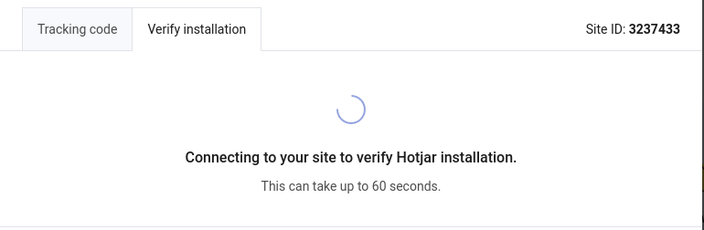

Odoo-Hotjar Integration
by Macopedia
How to enable Hotjar tracking on your Odoo website?
1. Get your website ID from Hotjar
2. Paste your website ID into website form in Odoo, and mark the "Is Hotjar integration active" field.
Those fields should be in the "External services" page in website form.
3. Verify your installation from Hotjar website

And that's all! Enjoy tracking user actions on your website with Hotjar.
Contributors:
a.preibisz@macopedia.com
m.pieczynski@macopedia.com
Maintainers:
This module is maintained by Macopedia